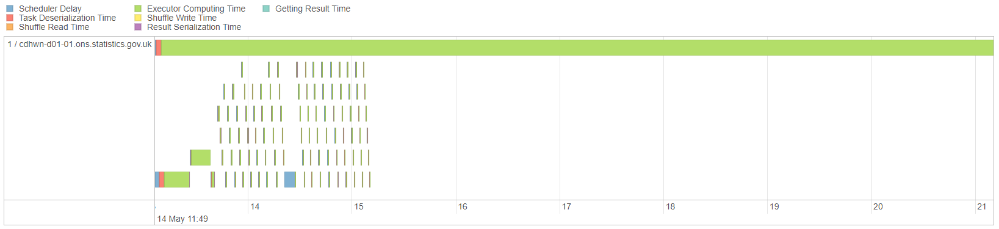
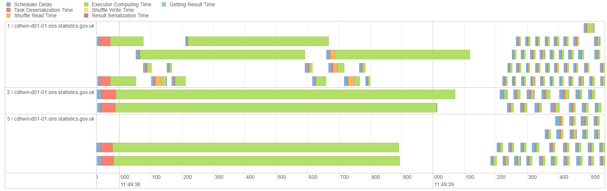

Salted Joins¶
When joining DataFrames in Spark with a Sort Merge Join, all the data with the same join keys will be moved to the same partition. Spark works best when partitions are of roughly equal size. If the data are skewed so that some partitions are much larger than others, then a disproportionate amount of time will be spent on dealing with data in one partition.
Attempting to force a repartition of the DataFrame with .repartition() (PySpark) or sdf_repartition() (sparklyr) will not work, as a Sort Merge Join will then automatically shuffle the data based on join keys. Note that this issue will not occur if the smaller DataFrame is able to be broadcast, since that does not force a shuffle of the DataFrames.
To resolve this issue, we can change the join keys manually, so that the larger partitions get split into smaller ones. This is called salting.
Salted Join Example¶
First, create a Spark session. This example may not work on a local session as the DataFrame is artificially created and is ten million rows long. Note that broadcast joins are being disabled by default.
import os
from pyspark.sql import SparkSession, functions as F
spark = (SparkSession.builder
.appName("joins")
.config("spark.executor.memory", "1500m")
.config("spark.executor.cores", 2)
.config("spark.dynamicAllocation.enabled", "true")
.config("spark.dynamicAllocation.maxExecutors", 4)
# Disable Broadcast join by default
.config("spark.sql.autoBroadcastJoinThreshold", -1)
.getOrCreate())
library(sparklyr)
library(dplyr)
small_config <- sparklyr::spark_config()
small_config$spark.executor.memory <- "1500m"
small_config$spark.executor.cores <- 2
small_config$spark.dynamicAllocation.enabled <- "true"
small_config$spark.dynamicAllocation.maxExecutors <- 4
# Disable Broadcast join by default
small_config$spark.sql.autoBroadcastJoinThreshold <- -1
sc <- sparklyr::spark_connect(
master = "yarn-client",
app_name = "joins",
config = small_config)
Create a DataFrame with excessive skew by using spark.range()/sdf_seq() to create a one column DF with an id column, then assigning an arbitrary letter from A to E.
row_ct = 10**7
skewed_df = spark.range(row_ct).withColumn("join_col", F.when(F.col("id") < 100, "A")
.when(F.col("id") < 1000, "B")
.when(F.col("id") < 10000, "C")
.when(F.col("id") < 100000, "D")
.otherwise("E"))
row_ct <- 10 ** 7
skewed_df <- sparklyr::sdf_seq(sc, 0, row_ct - 1) %>%
sparklyr::mutate(join_col = dplyr::case_when(
id < 100 ~ "A",
id < 1000 ~ "B",
id < 10000 ~ "C",
id < 100000 ~ "D",
TRUE ~ "E"))
To show just how skewed this DF is, group the data by join_col and get the row count; 99% of the values of join_col are "E":
(skewed_df
.groupBy("join_col")
.count()
.withColumn("pct_of_data", F.round((F.col("count") / row_ct) * 100, 3))
.show())
skewed_df %>%
dplyr::group_by(join_col) %>%
dplyr::summarise(count = n()) %>%
sparklyr::mutate(pct_of_data = round((count / row_ct) * 100, 3)) %>%
sparklyr::collect() %>%
print()
+--------+-------+-----------+
|join_col| count|pct_of_data|
+--------+-------+-----------+
| E|9900000| 99.0|
| B| 900| 0.009|
| D| 90000| 0.9|
| C| 9000| 0.09|
| A| 100| 0.001|
+--------+-------+-----------+
Create another DF, small_df that will be joined to skewed_df. This is a simple mapping of letters to numbers.
small_df = spark.createDataFrame([
["A", 1],
["B", 2],
["C", 3],
["D", 4],
["E", 5]
], ["join_col", "number_col"])
small_df <- sparklyr::sdf_copy_to(sc, data.frame(
join_col = LETTERS[1:5],
number_col = 1:5))
Now join, using the default Sort Merge Join:
joined_df = skewed_df.join(small_df, on="join_col", how="left")
joined_df <- skewed_df %>%
sparklyr::left_join(small_df, by="join_col")
We want to see how the DataFrame is processed on the cluster using the Spark UI, so use .count() and set the job description with .setJobDescription()/invoke("setJobDescription", ...):
spark.sparkContext.setJobDescription("Row Count")
joined_df.count()
sc %>%
sparklyr::spark_context() %>%
sparklyr::invoke("setJobDescription", "Row Count")
sparklyr::sdf_nrow(joined_df)
10000000
Group the data to verify the result of the join:
spark.sparkContext.setJobDescription("Show Grouped Data")
joined_df.groupBy("join_col", "number_col").count().show()
sc %>%
sparklyr::spark_context() %>%
sparklyr::invoke("setJobDescription", "Show Grouped Data")
joined_df %>%
dplyr::group_by(join_col, number_col) %>%
dplyr::summarise(count = n()) %>%
sparklyr::collect() %>%
print()
+--------+----------+-------+
|join_col|number_col| count|
+--------+----------+-------+
| E| 5|9900000|
| B| 2| 900|
| D| 4| 90000|
| C| 3| 9000|
| A| 1| 100|
+--------+----------+-------+
Looking at the Spark UI for the Row Count job, we can see that one partition is taking much longer than the rest to process:
spark_ui_url = "spark-%s.%s" % (os.environ["CDSW_ENGINE_ID"], os.environ["CDSW_DOMAIN"])
spark_ui_url
spark_ui_url <- paste0(
"http://",
"spark-",
Sys.getenv("CDSW_ENGINE_ID"),
".",
Sys.getenv("CDSW_DOMAIN"))
print(spark_ui_url)
'spark-eh9rfvaqfb5opghz.cdswmn-d01-01.ons.statistics.gov.uk'

This is because all of the data with the same join key will be on the same partition. To split this up, we can salt the keys. Salting is the process of artificially creating new join keys. For instance, the E key could be split into ten new keys, called E-0, E-1 … E-9. Provided the salting is identical in both DataFrames the result of the join will be correct. As with any similar process, ensure that your code is fully tested.
The easiest way to do this is by concatenating a random number to the key in both DataFrames. We are using a seed here for reproducibility.
In this example we will salt every key as we do not have many unique values in our key column, but you can also use F.when() to salt only specified values if you wish.
We could change salt_count here; 10 is used as an example but you can change this depending on just how skewed your data are. Our example of 99% of the join keys being the same value is deliberately extreme and a higher salt_count would likely improve the efficiency. As with a lot of Spark issues, it is good to experiment and see what works best for your own situation.
spark.sparkContext.setJobDescription("Salted Join")
salt_count = 10
seed_no = 123
skewed_df = skewed_df.withColumn("salted_col",
F.concat(
# Salted column will be in the format A-0, A-1...E-9
F.col("join_col"),
F.lit("-"),
F.floor(F.rand(seed_no) * salt_count)))
skewed_df.show()
sc %>%
sparklyr::spark_context() %>%
sparklyr::invoke("setJobDescription", "Salted Join")
salt_count <- 10
seed_no <- 123L
skewed_df <- skewed_df %>%
# Salted column will be in the format A-0, A-1...E-9
sparklyr::mutate(salted_col = concat_ws("-", join_col, floor(rand(seed_no) * salt_count)))
skewed_df %>%
head(20) %>%
sparklyr::collect() %>%
print()
+---+--------+----------+
| id|join_col|salted_col|
+---+--------+----------+
| 0| A| A-5|
| 1| A| A-9|
| 2| A| A-8|
| 3| A| A-8|
| 4| A| A-3|
| 5| A| A-4|
| 6| A| A-1|
| 7| A| A-5|
| 8| A| A-9|
| 9| A| A-1|
| 10| A| A-8|
| 11| A| A-2|
| 12| A| A-2|
| 13| A| A-0|
| 14| A| A-4|
| 15| A| A-7|
| 16| A| A-9|
| 17| A| A-7|
| 18| A| A-4|
| 19| A| A-1|
+---+--------+----------+
only showing top 20 rows
We now need to join on salted_col, so obviously need to create this column in skewed_df too. We can achieve this with a cross join (also sometimes called the cartesian product), to generate all the combinations of the salted values. Be careful when using cross joins as the number of rows returned will be the product of the row count in the two DataFrames.
Create a DataFrame of the numbers 0 to 9:
salt_df = spark.range(salt_count)
salt_df <- sparklyr::sdf_seq(sc, 0, salt_count - 1)
Cross join this to small_df to generate every combination, then concatenate it in the same way as previously:
small_df_salted = (small_df
.crossJoin(salt_df)
.withColumn("salted_col",
F.concat(
F.col("join_col"),
F.lit("-"),
F.col("id")
))
.drop("id", "join_col"))
small_df_salted.show()
small_df_salted <- small_df %>%
sparklyr::full_join(salt_df, by=character()) %>%
sparklyr::mutate(salted_col = concat_ws("-", join_col, id)) %>%
sparklyr::select(-id, -join_col)
small_df_salted %>%
head(20) %>%
sparklyr::collect() %>%
print()
+----------+----------+
|number_col|salted_col|
+----------+----------+
| 1| A-0|
| 1| A-1|
| 2| B-0|
| 2| B-1|
| 1| A-2|
| 1| A-3|
| 1| A-4|
| 2| B-2|
| 2| B-3|
| 2| B-4|
| 1| A-5|
| 1| A-6|
| 2| B-5|
| 2| B-6|
| 1| A-7|
| 1| A-8|
| 1| A-9|
| 2| B-7|
| 2| B-8|
| 2| B-9|
+----------+----------+
only showing top 20 rows
Now join on salted_col and .count() the DataFrame, once again setting the job description first:
salted_join_df = skewed_df.join(small_df_salted, on="salted_col", how="left")
spark.sparkContext.setJobDescription("Salted Join Row Count")
salted_join_df.count()
salted_join_df <- skewed_df %>%
sparklyr::left_join(small_df_salted, by="salted_col")
sc %>%
sparklyr::spark_context() %>%
sparklyr::invoke("setJobDescription", "Salted Join Row Count")
sparklyr::sdf_nrow(salted_join_df)
10000000
Verify that the result was the same as before:
spark.sparkContext.setJobDescription("Salted Join Show Grouped Data")
salted_join_df.groupBy("join_col", "number_col").count().show()
sc %>%
sparklyr::spark_context() %>%
sparklyr::invoke("setJobDescription", "Salted Join Show Grouped Data")
joined_df %>%
dplyr::group_by(join_col, number_col) %>%
dplyr::summarise(count = n()) %>%
sparklyr::collect() %>%
print()
+--------+----------+-------+
|join_col|number_col| count|
+--------+----------+-------+
| D| 4| 90000|
| A| 1| 100|
| E| 5|9900000|
| C| 3| 9000|
| B| 2| 900|
+--------+----------+-------+
Finally, look at the Spark UI for Salted Join Row Count to see that the parallelism is improved:
spark_ui_url
spark_ui_url
'spark-eh9rfvaqfb5opghz.cdswmn-d01-01.ons.statistics.gov.uk'

The key metric here is not the overall time, but how the work is distributed. It is shared more equally and there is no longer one long green bar taking far longer than the other processes. In real life examples where salting is essential you will find that the Spark UI looks much more efficient; obviously this is only a minimal example.
Salting Alternatives¶
Salting is not the only option for dealing with skewed DataFrames:
Broadcasting the smaller DataFrame removes the need for a shuffle of the larger DF, and so the partitioning will remain the same. A broadcast join should also be more efficient than salting.
Some parts of the join could be achieved with conditional statements, e.g. split the DF into two and use
F.when()/case_when()for the larger join keys then a regular join for the rest.Reducing the size of the larger DataFrame may be possible in some circumstances, e.g. by grouping or filtering earlier in the process.
If salting only leads to minor improvements in efficiency you may prefer not to salt and just use a regular sort merge join; you may feel that the benefits of the code being more readable and requiring less testing are worth a small sacrifice of efficiency
Further Resources¶
PySpark Documentation:
sparklyr/dplyr Documentation:
full_join(): there is no native cross join function in sparklyr; the documentation recommends usingby=character()
Spark SQL Documentation:
Spark in ONS material:
Join Concepts: explains shuffle hash joins and broadcast joins
Spark Application and UI
Cross Joins
Spark SQL Functions in sparklyr